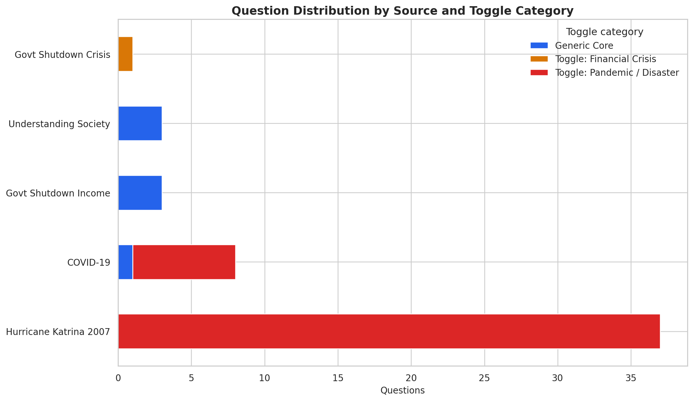
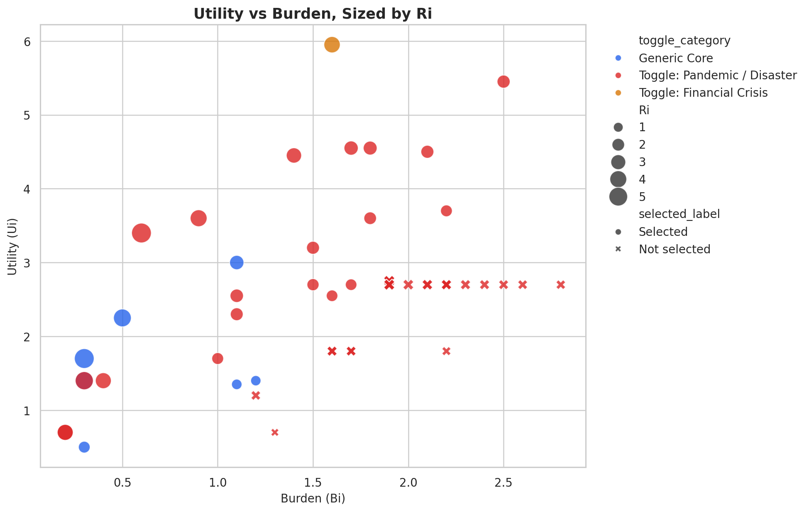
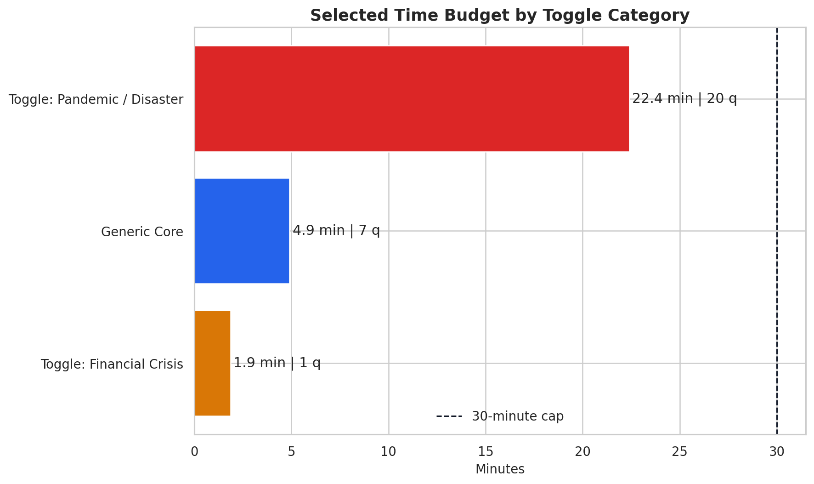

Total ranked questions
52
Integrated corpus across five PSID-related sources.
Web-formatted stakeholder report for the Katrina-integrated PSID crisis module. This page consolidates the final notebook-backed metrics, methodological definitions, timing tables, construct coverage, and refreshed figures into a single public artifact.
The final ranked workflow now uses the Katrina-integrated output as the single source of truth for report tables, figure generation, dashboard data, and stakeholder-facing questionnaire artifacts. The selected module keeps the always-on Generic Core intentionally short, then spends the remaining budget on the higher-value crisis-specific add-on, which is now dominated by Pandemic / Disaster content because the Katrina bank materially improved housing, trauma, displacement, and government-aid coverage.
Katrina integration pushed the final module beyond purely economic exposure. The selected set now shows strong representation for trauma and health, housing and shelter, and government aid alongside employment and financial coping.
The ranked selection still trims a 68.95-minute corpus into a 29.17-minute deployment benchmark by privileging questions with stronger utility and lower burden. That is the core value of the optimization workflow.
The notebook refresh cell, generated figures, dashboard bundle, HTML questionnaires, and this web report all reflect the same final ranked-question file instead of drifting across separate manual exports.
Questions are ranked with a utility-to-burden ratio that balances analytical value against respondent effort. Utility is driven by taxonomy-weighted crisis keywords. Burden penalizes longer wording and question complexity so that high-value, shorter questions can rise to the top.
Ri is the final ranking score for question i. Higher values indicate better information return per unit of burden.
Ui sums taxonomy impact weights for the crisis-relevant keywords extracted from the question text. More consequential constructs receive larger weights.
Bi scales with question length Ni and structural complexity Ci, with a minimum floor so the ratio remains stable.
Configured parameters used by the maintained notebook and artifact generator.
| Constant | Value | Purpose |
|---|---|---|
| ALPHA | 0.10 | Word-count burden coefficient |
| BETA | 0.20 | Complexity burden coefficient |
| SECS_PER_WORD | 7 | Duration estimate for mixed-mode completion |
| MAX_SECONDS | 1800 | Hard 30-minute ceiling |
What the optimization objective means in field terms.
| Term | Definition |
|---|---|
| Generic Core | Always-on questions that remain useful across crisis types. |
| Toggle subset | Event-specific bank activated for financial shocks or pandemic and disaster events. |
| Selected for module | Final decision flag stored in the ranked CSV and reused by all downstream artifacts. |
| Time budget | Total deployment duration constrained to stay below 30 minutes. |
The tables below summarize the validated notebook outputs used to justify the final module structure and to show how the selected set differs from the full integrated corpus.
Question counts by source before and after final selection.
| Source | Total | Selected |
|---|---|---|
| Hurricane Katrina 2007 | 37 | 13 |
| COVID-19 | 8 | 8 |
| Govt Shutdown Income | 3 | 3 |
| Understanding Society | 3 | 3 |
| Govt Shutdown Crisis | 1 | 1 |
| Total | 52 | 28 |
Selected module composition by routing category.
| Toggle category | Total | Selected |
|---|---|---|
| Toggle: Pandemic / Disaster | 44 | 20 |
| Generic Core | 7 | 7 |
| Toggle: Financial Crisis | 1 | 1 |
Construct counts inside the selected final module.
| Construct | Selected count |
|---|---|
| Trauma / Health | 13 |
| Employment | 7 |
| Government Aid | 5 |
| Housing / Shelter | 5 |
| Economic / Income | 4 |
| Financial Coping | 3 |
| Demographics | 3 |
Validated deployment time by active module component.
| Module component | Questions | Minutes |
|---|---|---|
| Generic Core | 7 | 4.87 |
| Toggle: Financial Crisis | 1 | 1.17 |
| Toggle: Pandemic / Disaster | 20 | 23.13 |
| Total selected | 28 | 29.17 |
These figures are the same artifact outputs referenced by the dashboard and refreshed notebook. They show the question ranking profile, module composition, construct spread, and time-budget implications of the final selected benchmark.

The highest-ranked retained questions are still led by financial hardship, earnings loss, work interruption, and other compact but analytically rich crisis signals.

The final benchmark is dominated by Pandemic / Disaster content because the Katrina bank contributes many high-value housing, trauma, displacement, and aid questions.

Selected questions cluster in the more favorable region where higher utility can still be achieved without disproportionate burden.

The final module now covers a broader crisis spectrum, with trauma and health, housing, and government aid clearly visible alongside labor-market disruption.

The module is intentionally tight. Most of the deployment time is spent on the Pandemic / Disaster bank, while the Generic Core remains short and reusable.